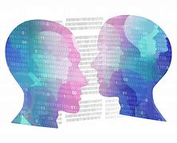

history of Deepfake
Origins and Early Development
The foundational technology behind deepfakes, deep learning and GANs (Generative
Adversarial Networks), began to mature around 2014. GANs, introduced by Ian Goodfellow and his
colleagues, were pivotal. The term "deepfake" emerged around late 2017 from a Reddit user who posted
manipulated pornographic videos using this technology
2017-2018: The term "deepfake" started gaining widespread attention. The creation of user-friendly
tools and software, such as FakeApp, allowed non-experts to create deepfakes, significantly
increasing the proliferation of deepfake content.
2018: High-profile examples included manipulated videos of celebrities and political figures,
sparking concerns over misinformation and the potential misuse of deepfakes. 